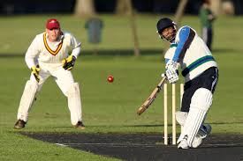

Cricket is a game played between two teams, generally of 11 members each.
In essence, it is single combat, in which an individual batsman does battle
against an individual bowler, who has helpers known as fielders. The bowler
propels the ball with a straight arm from one end of the 22-yard pitch in an
attempt to dismiss the batsman by hitting a target known as the wicket at the
other end, or by causing the batsman to hit the ball into the air into a
fielder's grasp, or by inducing one of a number of other indiscretions.

The batsman attempts to defend the wicket with the bat and to score runs -
the currency of the game - by striking the ball to the field boundary,
or far enough from the fielders to allow the batsman to run to the other
end of the pitch before the ball can be returned. At least two bowlers must
take turns, from alternating ends; also, there are always two batsmen on the
field, each to take a turn as required. When all but one of the batting team
have been dismissed - or after an agreed period - the teams' roles are
reversed. After all the players required to bat on both sides have done
so either once or twice (which can take from a few hours to five days) the
total number of runs accumulated determines the winner. But sometimes there
isn't one.